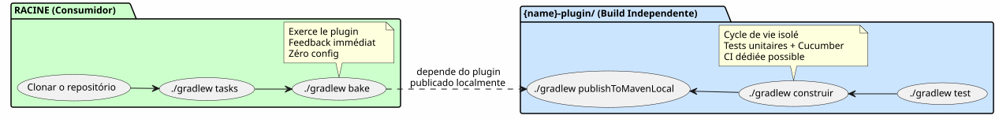

A Arquitetura « Plugin Independente + Raiz do Consumidor » : Por que meus Builds Gradle se duplicam
Publié le 14 May 2026
- O Problema : Três Arquiteturas Que Me Fizeram Perder Tempo
- A Solução : Dois Builds Independentes, Uma Raiz do Consumidor
- Por que essa arquitetura me conquistou
- A Anatomia do Subdiretório `{name}-plugin/
- O Que Não Se Faz
- Comparação: As Três Arquiteturas Face ao Dogfooding
- O Contrato DAG : Um Build Racin Nunca de um Subdiretório
- Conclusão: a duplicação aparente que faz ganhar tempo
- Referências
Você clona um repositório de plugin Gradle. Você abre um terminal. O que você está digitando? depois?./gradlew tasks, claro. Mas em qual pasta? A raiz? O submódulo? Deve-se primeiro ler um README para saber como compilar ? Se você hesitar não seria Em um segundo, a arquitetura do projeto está quebrada.
Eis como resolvi esse problema de vez — e por que isso padrão é hoje a assinatura de todos os meus plugins Gradle em`foundry/public/`.
O Problema : Três Arquiteturas Que Me Fizeram Perder Tempo
Antes de convergir para o padrão atual, eu tateei entre três abordagens. clássicos para organizar um plugin Gradle. Cada um tinha um defeito redhibitório.
Opção 1 : O Plugin Isolado (sem dogfooding)
O projeto contém apenas o plugin. Sem exemplo de consumo. Sem projeto que o exerce. Para testá-lo, é necessário criar um projeto externo, lá referenciar o plugin via`mavenLocal`ou um build composto, e somente lá para verificar que funciona
$ git clone mon-plugin
$ cd mon-plugin
$ ./gradlew build # le plugin compile
$ # ... et maintenant ? comment je l'essaie ?|
Um plugin Gradle sem exemplo de consumo, é uma biblioteca sem testes de integração. Você nunca sabe se a última modificação tem quebrou a experiência do usuário. |
Opção 2: O Monorepo Clássico (include(":plugin"))
Gradle`init`gera`settings.gradle.kts`com`include("plugin")`. O root e o submódulo compartilham o mesmo daemon, as mesmas configurações, os mesmos catálogos. Prático, mas acoplado
.
├── settings.gradle.kts → include("plugin")
├── build.gradle.kts → plugins { id("mon-plugin") }
├── plugin/
│ └── build.gradle.kts → java-gradle-plugin
└── gradle/
└── libs.versions.tomlO que trava:
-
a raizdeveter a mesma versão do Gradle que o submódulo.
-
`libs.versions.toml`é compartilhado — catálogos de versão comuns, dependências
que fogem de um módulo para outro.
-
Impossível construir o plugin independentemente do root.
-
O CI deve construir os dois módulos, mesmo que apenas o plugin tenha mudado.
Opção 3 : a Build Composto (includeBuild())
Separamos os dois em builds Gradle distintos e os conectamos via includeBuild("mon-plugin")`em`settings.gradle.kts.
Já está melhor. O build do plugin está isolado. Mas o consumidor deve explicitamente referenciar o build externo — e a saída de `./gradlew tasks`na raiz depende da configuração correta do composite. A clonagem não é zero-config: é preciso saber que o plugin está em um diretório separado, o root faz referência a ele, etc.
.
├── settings.gradle.kts → includeBuild("plugin-build/")
├── build.gradle.kts → plugins { id("mon-plugin") }
└── plugin-build/
├── settings.gradle.kts
└── build.gradle.ktsEu estava procurando melhor. Muito melhor.
A Solução : Dois Builds Independentes, Uma Raiz do Consumidor
Este é o padrão que acabei por adotar :
.
├── settings.gradle.kts ← racine consommateur
├── build.gradle.kts ← 3 lignes : apply plugin + dogfood
├── gradle/
│ └── libs.versions.toml ← catalogue du consommateur
├── {name}-plugin/ ← BUILD INDÉPENDANT
│ ├── gradlew ← son propre wrapper
│ ├── settings.gradle.kts ← rootProject.name = "{name}-plugin"
│ ├── build.gradle.kts ← java-gradle-plugin, signing, publish
│ ├── gradle/
│ │ ├── libs.versions.toml ← catalogue du plugin
│ │ └── wrapper/
│ ├── src/ ← sources du plugin
│ ├── .agents/ ← gouvernance agent
│ └── *.adoc ← AGENT, PROMPT_REPRISE, snapshot, etc.
└── site.yml / slides-context.yml / ... ← configs dogfood|
A chave:`{name}-plugin/`é um projeto Gradle completo e autônomo. Ele tem o próprio wrapper, o próprio settings, o próprio católico de versões. Ele é clonado, buildado, testado e publicado sem que o root seja ciente de sua existência |
O root, ele, só faz uma coisa : aplicar o plugin
plugins {
alias(libs.plugins.bakery)
}
repositories {
mavenLocal()
mavenCentral()
}
bakery { configPath = file("site.yml").absolutePath }Três linhas no caso de`bakery-gradle`. Nada mais Zero`include(), zero`includeBuild(), zero subprojeto. Um build Gradle clássico que aplica um plugin como qualquer qual consumidor faria isso
O Fluxo de Trabalho

O Workflow Concreto
# 1. Builder le plugin
$ cd codebase-plugin
$ ./gradlew publishToMavenLocal
# 2. L'exercer depuis la racine
$ cd ..
$ ./gradlew indexCodebase queryCodebase snapshot
# La boucle est fermée. Le plugin est testé dans des conditions
# réelles de consommation, par le projet même qui l'héberge.Por que essa arquitetura me conquistou
Três benefícios que, combinados, valem o custo da «duplicação»:
1. Dogfooding Nativo, Feedback Instantâneo
O melhor teste de um plugin Gradle é usá-lo. Não é um teste unitário mockado. Não é um`GradleRunner`com um projeto de teste. Um verdadeiro build que aplica o plugin em arquivos reais.
$ git clone bakery-gradle
$ cd bakery-gradle
$ ./gradlew bake # ← le plugin est exercé immédiatementSe o plugin estiver quebrado, o build raiz diz isso. Não é necessário ir procurar um projeto de teste externo. O dogfooding é a primeira. tarefa que lança um novo contribuidor. É o teste de fumaça definitivo.
|
A regra é simples: se a raiz compila e que`./gradlew tasks` exibe suas tarefas de plugin, o plugin está funcional. Sem surpresa em produção. |
2. Clonagem Zero-Config
Un `git clone && ./gradlew tasks`e o recém-chegado vê tudo caminhar sem configurar nada. O`build.gradle.kts`raiz é a documentação viva de uso do plugin. O`site.yml`ao lado Mostra a configuração esperada.
Compare com a alternativa: um README de três parágrafos que explica como construir o plugin e como construir o projeto de teste. Um novo colaborador lê o README na diagonal, está enganado, abre uma issue — enquanto a informação poderia ser executável.
|
A documentação mais robusta não é aquela que se lê. É aquela que a genteexecuta. O build raiz é a documentação executável do plugin. |
3. Builds Isolados, CI Independentes
O plugin tem seu próprio wrapper Gradle, seu próprio ciclo de vida, seus próprios testes. Você pode :
-
Atualizar o Gradle no plugin sem tocar na raiz
-
Adicionar uma dependência no plugin sem que ela vaze para a raiz
-
Quebrar o plugin sem afetar o build raiz (enquanto você não
não publique a versão quebrada)
-
Ter uma CI que build/test o plugin, e outra que exerce o
root — independentemente
.github/workflows/
├── test-plugin.yml → codebase-plugin/.gradlew build
├── test-root.yml → .gradlew tasks (vérifie que le plugin est consommable)
└── publish.yml → codebase-plugin/.gradlew publishA Anatomia do Subdiretório `{name}-plugin/
Vamos dar uma olhada mais atenta no que vive na pasta do plugin:
codebase-plugin/
├── gradlew ← wrapper indépendant
├── settings.gradle.kts ← @Suppress("UnstableApiUsage")
│ + foobar-resolver-convention
├── build.gradle.kts ← java-gradle-plugin + signing + publish
├── gradle/
│ ├── libs.versions.toml ← catalogue complet (langchain4j, pgvector...)
│ └── wrapper/
├── buildSrc/ ← classes utilitaires buildSrc
│ ├── build.gradle.kts
│ └── src/main/kotlin/
│ ├── codebase/ ← CodebaseYmlAnonymizer, CodebaseConfiguration
│ ├── benchmark/ ← BenchmarkConfig, BenchmarkProtocol
│ ├── readme/ ← ReadmeYmlAnonymizer
│ ├── site/ ← SiteYmlAnonymizer
│ ├── slider/ ← SliderYmlAnonymizer
│ └── snapshot/ ← SnapshotManager
├── src/
│ ├── main/kotlin/codebase/
│ │ ├── CodebasePlugin.kt ← class Plugin<Project>
│ │ ├── rag/ ← pgvector, embedding, anonymization...
│ │ ├── benchmark/ ← BenchmarkRunner, export, comparison...
│ │ └── walker/ ← WorkspaceWalker
│ └── test/
│ ├── kotlin/codebase/scenarios/ ← steps Cucumber
│ ├── features/ ← .feature files
│ └── resources/datasets/ ← fixtures .adoc, .yml, .json
├── .agents/ ← gouvernance agent (INDEX, SESSIONS, etc.)
├── AGENT.adoc ← règles agent
├── PROMPT_REPRISE.adoc ← mission session
├── BACKLOG.adoc ← backlog produit
├── snapshot.adoc ← snapshot auto-généré du projet
└── embeds.yml ← config RAG embedsTudo está aqui. Não há dispersão entre a raiz e o subdiretório. O desenvolvedor que trabalha no plugin nunca precisa de sair`codebase-plugin/`. O desenvolvedor que usa o plugin só olha a raiz — e o`build.gradle.kts`de 3 linhas ele lhe diz tudo o que ele precisa saber
O Catálogo de Versões: Dois Arquivos Distintos
|
|
|
Número de dependências |
2-3 (plugin + readme opcionalmente) |
30+ (langchain4j, pgvector, cucumber…) |
papel |
Consumir o plugin |
Construa o plugin |
Quem o lê |
O utilizador do plugin |
O desenvolvedor do plugin |
O root tem um catálogo intencionalmente mínimo. O plugin tem um catálogo completo. A confusão é impossível: cada build tem seu próprio scope de dependências.
|
Se já passou uma hora depurando uma colisão de dependências entre o seu plugin e o seu projeto de teste, você compreende o valor de esta separação. Os catálogos independentes eliminam esse problema por construção. |
O Que Não Se Faz
Este padrão não é mágico. Ele impõe uma restrição que eu Me inflige voluntariamente:
O root não constrói o plugin. Você deve`publishToMavenLocal` ou implantar em um repositório antes que o root possa consumi‑lo.
É um custo mínimo, e é a boa restrição. O root Consome o plugin como um cliente externo — via Maven. Exatamente como faria um projeto de terceiros. Se o plugin não for publicável, o root lhe diz imediatamente.
# La seule "friction" du pattern
$ cd codebase-plugin && ./gradlew publishToMavenLocal && cd ..
$ ./gradlew tasks --group=codebaseComparação: As Três Arquiteturas Face ao Dogfooding
Plugin isolado |
Monorepo`include()` |
Composto`includeBuild()` |
Raiz + plugin ind. |
|
`git clone && gradlew tasks`dá as tarefas do plugin |
�❌ |
[No output] |
✅ |
✅ |
Construir plugin independente do root |
✅ |
�❌ |
✅ |
✅ |
Catálogo de versões separado |
(empty) |
❌ |
✅ |
(No output, as no French text was provided for translation) |
Não`include()` ni |
�✅ |
�❌ |
�❌ |
✅ |
Dogfood nativo sem config |
�❌ |
✅ |
Could you please provide the French text you would like translated? |
�✅ |
plugin CI independiente |
�✅ |
�❌ |
�✅ |
✅ |
O root é um exemplo de consumo real |
�❌ |
[No output] |
✅ |
✅ |
A coluna da direita marca todas as caixas. É por isso que eu não Voltarei mais para trás
O Contrato DAG : Um Build Racin Nunca de um Subdiretório
Esta arquitetura integra-se naturalmente no DAG N0→N3 do meu workspace. O padrão é : o plugin N2 é o hub de suas próprias dependências, a raiz N3 é um terminal que aplica *hubs
Le codebase-gradle/build.gradle.kts`faz 6 linhas. Não`src/, não`buildSrc/, não`gradle/rag-bench.gradle.kts. Justo plugins { alias(libs.plugins.codebase) }`e os repositórios. Toda a complexidade vive em`codebase-plugin/.
Conclusão: a duplicação aparente que faz ganhar tempo
Quando eu mostro esta estrutura a alguém, a primeira reação é frequentemente : « Mas tu tens dois`gradlew`, dois`settings.gradle.kts`, dois`libs.versions.toml`— é duplicação!
Sim. E não.
A « duplicação », é reproduzir a mesma informação em dois locais. Aqui, são dois arquivos distintos que servem dois usos distintos : o catálogo do plugin (30+ dependências para builder) e o catálogo da raiz (2-3 dependências para consumir). O wrapper do plugin (versão bloqueada para o desenvolvimento) e o wrapper da raiz (versão potencialmente diferente, para o exercício do plugin).
Não é duplicação. É de separação dos responsabilidades aplicada ao sistema de build. Cada build Faz uma coisa, e apenas uma. A raiz consome. O plugin se constrói.
O custo? Uma ordem`publishToMavenLocal`entre o build do plugin e o build da raiz. O ganho? Uma clareza arquitetural que elimina horas de depuração a jusante
Desde que eu implementei este padrão em`bakery-gradle`, plantuml-gradle, codebase-gradle, e os outros plugins de`foundry/public/, não tenho nunca mais hesitei ao abrir um terminal em um dos meus repositórios. O primeiro reflexo —./gradlew tasks`— anda sempre, dá sempre as boas tarefas, e me diz instantaneamente se tudo está sadio.
É isso, a boa arquitetura. Ela não se lê num README. Ela é testada em um terminal, em menos de dez segundos.